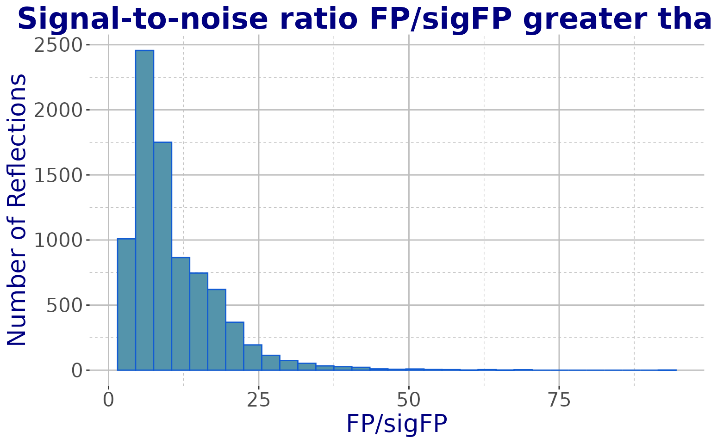

Read and analyse an MTZ file
MTZ.RmdIntroduction
Main aim of this tutorial is to load the full content of an MTZ file in the workspace, to analyse and modify data, and to write the modified content into a new MTZ file.
Sample MTZ file
Some sample files are stored as external data in this package. These
are the MTZ files available with the current release. To access the
file, first load the cry package.
Next, have a look at what is included in the external-data directory
of cry.
datadir <- system.file("extdata",package="cry")
all_files <- list.files(datadir)
print(all_files)
#> [1] "1dei_phases.mtz" "1dei-sf.cif"
#> [3] "2ol9_phases.mtz" "3syu.cif"
#> [5] "6vww_xds_ascii_merged.hkl" "AMS_DATA.cif"
#> [7] "e-65-00i60-Isup2.rtv" "shelxc.log"
#> [9] "shelxd.log" "shelxe_i.log"
#> [11] "shelxe_o.log" "xds00_ascii.hkl"We are interested in the MTZ file “1dei_phases.mtz”. This file can be
loaded using function readMTZ.
The structure of an MTZ file in R
Let’s load “1dei_phases.mtz” in memory. The created object is a named list.
filename <- file.path(datadir,"1dei_phases.mtz")
objMTZ <- readMTZ(filename)
class(objMTZ)
#> [1] "list"
names(objMTZ)
#> [1] "reflections" "header" "batch_header"Each component of is either a named list, or a data frame. More specifically:
-
reflectionsIt’s a data frame. It contains the actual x-ray diffraction data from a given crystal.
-
headerIt’s a named list. It contains information on the crystal used to obtain the x-ray diffraction data and on the diffraction experiment, in general.
batch_headerIt’s a named list. It gets filled only when the MTZ file
includes so-called “unmerged” data.
For the merged MTZ file we are exploring in this tutorial, the
batch_header is NULL.
The MTZ header
This is a named list. The names hint at the content of the specific components.
hdr <- objMTZ$header
class(hdr)
#> [1] "list"
names(hdr)
#> [1] "TITLE" "NCOL" "CELL" "SORT" "SYMINF" "RESO" "NDIF"
#> [8] "SYMM" "PROJECT" "CRYSTAL" "DATASET" "DCELL" "DWAVEL" "COLUMN"
#> [15] "COLSRC"For example, NCOL is the number of columns of the
reflections data frame, CELL contains the
crystal unit cell parameters and SYMM includes information
on the crystal symmetry.
For the file loaded we find:
print(objMTZ$header$PROJECT)
#> id pname
#> 1 0 HKL_base
#> 2 1 sf_convert
print(objMTZ$header$CRYSTAL)
#> id cname
#> 1 0 HKL_base
#> 2 1 cryst_1
print(objMTZ$header$DATASET)
#> id dname
#> 1 0 HKL_base
#> 2 1 data_1The only dataset in this MTZ file is called data_1. It was
obtained from x-ray diffraction of a crystal called cryst_1.
This crystal is one of the samples belonging to a project called
sf_convert. All MTZ files contain, by default, a dataset
HKL_base which comes from the crystal HKL_base, which
is part of the project HKL_base; this peculiar project is
always present to make sure that data observations made only of the
Miller indices, are always included. More information on the header’s
content can be read in the documentation for readMTZ or
readMTZHeader.
The MTZ reflections
Data are actually contained in this component. It is a data frame
whose columns have the names found in the header component
COLUMN[,1]:
objMTZ$header$COLUMN[,1]
#> [1] "H" "K" "L" "FP" "SIGFP"
#> [6] "FC" "PHIC" "FC_ALL" "PHIC_ALL" "FWT"
#> [11] "PHWT" "DELFWT" "PHDELWT" "FOM" "FC_ALL_LS"
#> [16] "PHIC_ALL_LS"
objMTZ$reflections[1:5,]
#> H K L FP SIGFP FC PHIC FC_ALL PHIC_ALL FWT PHWT
#> 1 0 0 4 420.23508 48.025589 411.46274 0 441.54556 0 398.92459 0
#> 2 0 0 6 784.55963 53.490089 719.30823 180 780.32288 180 788.79639 180
#> 3 0 0 8 266.88480 18.889168 156.35133 0 145.58990 360 388.17963 360
#> 4 0 0 10 60.62275 21.459837 79.47448 0 82.45022 0 30.81676 0
#> 5 0 0 14 94.31614 5.330165 42.39147 0 46.47320 360 142.01843 360
#> DELFWT PHDELWT FOM FC_ALL_LS PHIC_ALL_LS
#> 1 42.620972 180 1.0000000 460.96564 0
#> 2 8.473511 180 1.0000000 743.42645 180
#> 3 242.589722 360 0.9999999 145.39508 360
#> 4 51.633461 180 0.9341952 81.84018 0
#> 5 95.545235 360 0.9992544 42.30125 360A data frame is the appropriate class for observations like the crystallographic x-ray data. One reason for this is, for instance, that grouping or selection according to a specific criterion can be carried out very easily with a data frame. Let us, as an example, select part of the data using a condition on the Miller indices. We can be interested to select reflections for which has a specific value; this is shown in the following chunk of code.
# List the different values of H
unique(objMTZ$reflections$H)
#> [1] 0 1 2 3 4 5 6 7 8 9 10 11 12 13 14 15 16 17 18 19 20 21 22 23 24
#> [26] 25 26 27 28 29 30 31 32 33 34 35
# Select all reflections with H=1
idx <- which(objMTZ$reflections$H == 1)
length(idx) # 373 reflections have H=0
#> [1] 373
# Save these reflections in a different object
refs <- objMTZ$reflections[idx,]
# Show the first 10 selected reflections
refs[1:10,]
#> H K L FP SIGFP FC PHIC FC_ALL PHIC_ALL
#> 338 1 0 4 69.46197 7.137606 67.48492 1.800000e+02 38.35452 1.800000e+02
#> 339 1 0 5 55.82940 1.932214 137.18262 9.000000e+01 120.74961 8.999999e+01
#> 340 1 0 6 296.25644 22.226982 283.05109 3.617508e-06 302.89392 2.897944e-06
#> 341 1 0 7 294.59216 23.033159 276.94324 2.700000e+02 294.35089 2.700000e+02
#> 342 1 0 8 77.35909 3.981911 69.41461 2.083899e-06 64.56831 2.083780e-06
#> 343 1 0 9 46.07975 4.606244 32.10196 2.700001e+02 30.71046 2.700001e+02
#> 344 1 0 12 118.85085 2.718317 90.03316 0.000000e+00 94.01305 0.000000e+00
#> 345 1 0 13 56.22640 4.300251 56.44312 8.999997e+01 53.37141 8.999997e+01
#> 346 1 0 14 52.02279 4.389729 70.51323 1.800000e+02 77.82328 1.800000e+02
#> 347 1 1 3 292.26788 26.617142 374.87027 1.705684e+02 279.07269 1.674537e+02
#> FWT PHWT DELFWT PHDELWT FOM FC_ALL_LS
#> 338 39.99242 1.800000e+02 1.6379013 1.800000e+02 0.5639557 50.18671
#> 339 12.13563 2.700000e+02 132.8852386 2.700000e+02 0.9727311 127.82761
#> 340 289.61896 2.897945e-06 13.2749634 1.800000e+02 1.0000000 290.93329
#> 341 294.83344 2.700000e+02 0.4825439 2.700000e+02 1.0000000 268.81738
#> 342 87.53786 2.083780e-06 22.9695587 2.083780e-06 0.9831176 73.09277
#> 343 32.66603 2.700001e+02 1.9555779 2.700001e+02 0.6876827 31.74592
#> 344 143.68866 0.000000e+00 49.6756134 0.000000e+00 1.0000000 90.22993
#> 345 59.07624 8.999997e+01 5.7048264 8.999997e+01 0.9999542 56.48866
#> 346 26.22218 1.800000e+02 51.6010971 8.662659e-06 0.9999989 70.44583
#> 347 294.21536 1.674537e+02 15.1426640 1.674536e+02 0.9807579 297.09183
#> PHIC_ALL_LS
#> 338 1.800000e+02
#> 339 8.999999e+01
#> 340 3.346423e-06
#> 341 2.700000e+02
#> 342 1.979033e-06
#> 343 2.700001e+02
#> 344 0.000000e+00
#> 345 8.999997e+01
#> 346 1.800000e+02
#> 347 1.674240e+02
# Find out the range of FP/sigFP for the selected reflections
range(refs$FP/refs$SIGFP)
#> [1] 2.374856 56.249997Clearly, a lot of different operations and investigations can be carried out on the selected data. A second example involves data for which the signal-to-noise ratio (FP/sigFP) is greater than 1, as shown in the following snippet.
idx <- which(objMTZ$reflections$FP/objMTZ$reflections$SIGFP >= 1)
length(idx) # 8377 reflections have FP/sigFP >= 1
#> [1] 8377
# The reflections can be extracted
refs <- objMTZ$reflections[idx,]
# Histogram of I/sigI with ggplot2
ggplot(data = refs, aes(FP/SIGFP)) +
geom_histogram(fill = "#5494AB", colour = "#125CD2", binwidth = 3) +
xlab("FP/sigFP") + ylab("Number of Reflections") +
labs(title = "Signal-to-noise ratio FP/sigFP greater than 1") +
theme_cry()
A third example is related to the reflections’ resolution. Once it
has been calculated (cell parameters are needed to do that), data can be
selected within a given resolution range (a so-called resolution
shell). There is a function in cry, called
hkl_to_reso, which calculates the resolution in angstroms
for a reflection of Miller indices
.
# Extract cell parameters from header
cpars <- objMTZ$header$CELL
print(cpars)
#> [1] 57.4 56.3 23.0 90.0 90.0 90.0
a <- cpars[1]; b <- cpars[2]; c <- cpars[3]
aa <- cpars[4]; bb <- cpars[5]; cc <- cpars[6]
# Resolution of reflection (1,0,0) (0,1,0) (0,0,1)
hkl_to_reso(1,0,0,a,b,c,aa,bb,cc)
#> [1] 57.4
hkl_to_reso(0,1,0,a,b,c,aa,bb,cc)
#> [1] 56.3
hkl_to_reso(0,0,1,a,b,c,aa,bb,cc)
#> [1] 23
# Reflections with higher Miller indices have higher resolutions
hkl_to_reso(10,0,0,a,b,c,aa,bb,cc)
#> [1] 5.74
hkl_to_reso(10,0,-20,a,b,c,aa,bb,cc)
#> [1] 1.127592Once resolutions are calculated (and the calculation is done on data having the same order as the original reflections), data within a given resolution shell can be selected.
resos <- hkl_to_reso(objMTZ$reflections$H,
objMTZ$reflections$K,
objMTZ$reflections$L,
a,b,c,aa,bb,cc)
# Resolution range for all data
range(resos)
#> [1] 1.600050 9.981333
# Select data with resolution between 5 and 9 angstroms
idx <- which(resos >= 5 & resos <= 9)
length(idx) # Only 314 reflections
#> [1] 314Output to a new MTZ file
In order to investigate specific ideas it might be worth to modify
the observations in a specific way and to write them out to a new MTZ
file to be later handled by the tools proper of the CCP4 family of programs for
crystallography. The cry function to write reflections
content to an MTZ file is called writeMTZ. In order to make
this a flexible function, it has been deemed appropriate to take as
input the three named lists returned by readMTZ. These will
have been changed by the user, prior to use with writeMTZ.
By default, the MTZ file title is left unchanged and the
batch_header list is set to NULL; thus by
default the MTZ file is assumed to be a merged-reflections file. Special
attention will have to be devoted to parts of the header
list, which store information on the observations. These are, for
instance, NCOL, SORT, RESO,
COLUMN, etc. An example can help to clarify this
concept.
A typical modifications of the observed data is when high-resolution
reflections are eliminated. This means that the number of reflections
and other quantities in the header will have to be
changed.
# Copy original data to 2 separate lists
refs <- objMTZ$reflections
hdr <- objMTZ$header
length(refs[,1]) # Number of reflections before cut
#> [1] 8377
print(hdr$NCOL[2])
#> [1] 8377
# Cut data to 5 angstroms resolution
# (see previous chunk of code for resos)
idx <- which(resos >= 5)
refs <- refs[idx,]
length(refs[,1]) # Now there are only 333 observations
#> [1] 333
# Modify specific parts of header
hdr$NCOL[2] <- length(refs[,1]) # Number of reflections
hdr$RESO <- sort(1/range(resos[idx])^2) # Resolution range
hdr$DATASET[2,2] <- "Data cut to 5A" # Dataset
obsmin <- apply(refs,2,min,na.rm=TRUE)
obsmax <- apply(refs,2,max,na.rm=TRUE)
hdr$COLUMN[,3] <- obsmin # COLUMN
hdr$COLUMN[,4] <- obsmaxThe data frame COLSRC contains the date and time at
which the specific data columns have been generated. This can be changed
with the cry function change_COLSRC; the new
date and time is the current one.
# Original COLSRC
print(hdr$COLSRC)
#> labels created id
#> 1 H CREATED_11/10/2017_01:55:14 0
#> 2 K CREATED_11/10/2017_01:55:14 0
#> 3 L CREATED_11/10/2017_01:55:14 0
#> 4 FP CREATED_11/10/2017_01:55:14 1
#> 5 SIGFP CREATED_11/10/2017_01:55:14 1
#> 6 FC CREATED_11/10/2017_01:55:14 1
#> 7 PHIC CREATED_11/10/2017_01:55:14 1
#> 8 FC_ALL CREATED_11/10/2017_01:55:14 1
#> 9 PHIC_ALL CREATED_11/10/2017_01:55:14 1
#> 10 FWT CREATED_11/10/2017_01:55:14 1
#> 11 PHWT CREATED_11/10/2017_01:55:14 1
#> 12 DELFWT CREATED_11/10/2017_01:55:14 1
#> 13 PHDELWT CREATED_11/10/2017_01:55:14 1
#> 14 FOM CREATED_11/10/2017_01:55:14 1
#> 15 FC_ALL_LS CREATED_11/10/2017_01:55:14 1
#> 16 PHIC_ALL_LS CREATED_11/10/2017_01:55:14 1
# Change date and time
hdr <- change_COLSRC(hdr)
# New COLSRC
print(hdr$COLSRC)
#> labels created id
#> 1 H CREATED_18/06/2025_10:29:38 0
#> 2 K CREATED_18/06/2025_10:29:38 0
#> 3 L CREATED_18/06/2025_10:29:38 0
#> 4 FP CREATED_18/06/2025_10:29:38 1
#> 5 SIGFP CREATED_18/06/2025_10:29:38 1
#> 6 FC CREATED_18/06/2025_10:29:38 1
#> 7 PHIC CREATED_18/06/2025_10:29:38 1
#> 8 FC_ALL CREATED_18/06/2025_10:29:38 1
#> 9 PHIC_ALL CREATED_18/06/2025_10:29:38 1
#> 10 FWT CREATED_18/06/2025_10:29:38 1
#> 11 PHWT CREATED_18/06/2025_10:29:38 1
#> 12 DELFWT CREATED_18/06/2025_10:29:38 1
#> 13 PHDELWT CREATED_18/06/2025_10:29:38 1
#> 14 FOM CREATED_18/06/2025_10:29:38 1
#> 15 FC_ALL_LS CREATED_18/06/2025_10:29:38 1
#> 16 PHIC_ALL_LS CREATED_18/06/2025_10:29:38 1Once all changes have been done, the list components are ready to be saved out to a new MTZ file called, in this specific instance, “new.mtz”.
# Temporary directory for output
tdir <- tempdir()
fname <- file.path(tdir,"new.mtz")
# Write changed data to the new MTZ file
writeMTZ(refs,hdr,fname,title="New truncated dataset")Data from the new MTZ file can either be explored using CCP4
programs, or read back into R using again readMTZ.
# Read data from "new.mtz"
newMTZ <- readMTZ(fname,TRUE)
#> [1] "COLUMN H H 0 11 0"
#> [1] "COLUMN K H 0 11 0"
#> [1] "COLUMN L H 0 4 0"
#> [1] "COLUMN FP F 12.105 1095.345 1"
#> [1] "COLUMN SIGFP Q 1.365 96.585 1"
#> [1] "COLUMN FC F 5.035 1055.738 1"
#> [1] "COLUMN PHIC P 0 360 1"
#> [1] "COLUMN FC_ALL F 1.210 1136.601 1"
#> [1] "COLUMN PHIC_ALL P 0 360 1"
#> [1] "COLUMN FWT F 0.133 1054.090 1"
#> [1] "COLUMN PHWT P 0 360 1"
#> [1] "COLUMN DELFWT F 0.070 393.415 1"
#> [1] "COLUMN PHDELWT P 0 360 1"
#> [1] "COLUMN FOM W 0.023 1.000 1"
#> [1] "COLUMN FC_ALL_LS F 1.537 1171.841 1"
#> [1] "COLUMN PHIC_ALL_LS P 0 360 1"